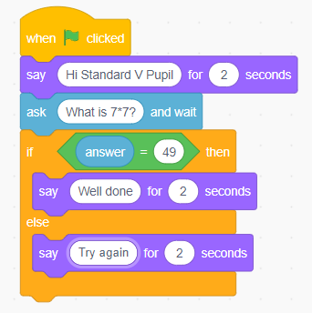

- 2. From the Looks block, choose the say ( ) for ( ) seconds block.
- 3. From the Sensing block, choose the ask ( ) and wait.
- 4. From the Control block, choose the if ( ) then ( ) else ( ).Add the condition statement as shown in Figure 12.
- 5. Click/press the Looks block and choose say ( ) for ( ) seconds.Add appropriate messages as shown in Figure 12.
Code blocks

Note:You can add more questions by duplicating the blocks.
Project
Create a quiz game that is fun and interactive for users to test their knowledge on numbers.
Note:The game should involve asking the user a question and provide feedback on whether the answer is correct or incorrect.
Drawing shapes in Scratch/Scratch for Quorum
Shapes are among the objects used to create simple and interactive games.
To draw shapes in Scratch/Scratch for Quorum, you have to add the Pen extension.To add the